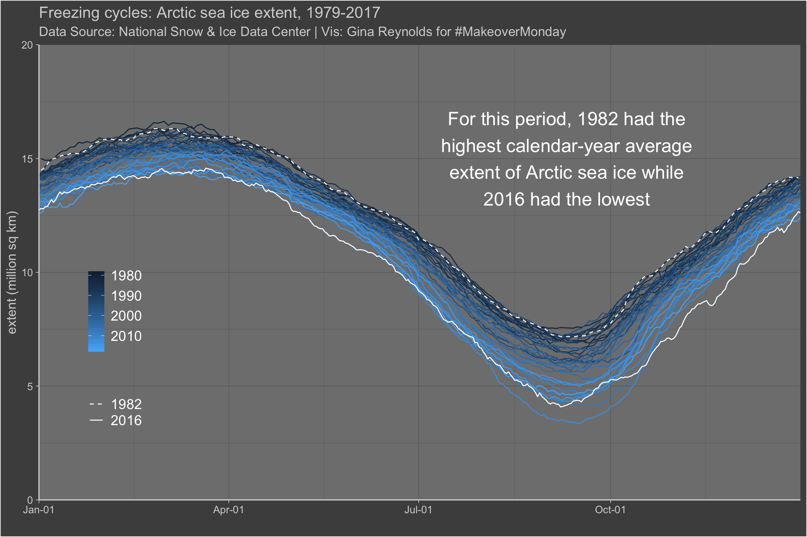

Chapter 14 Arctic Ice
This visualization shows the trend in Arctic Ice Sea Extent, data from the National Snow and Ice Data Center. If I recall correctly, the definition for coverage is the case where at least 15 percent of the sea is ice.
The visualization shows melting and freezing cycles, in accordance with the seasons — and the disconcerting trend of a general decrease in ice extent over the years.
One problem that arises is due to inconsistant number of days in each year. There is a measurement for every day, but leap years contain a extra day. Which means that plotting years over years leads to imperfect alignment. My solution was just to pretend that all the data come from a single year, 2000, and plot each of the years on that scale. The earliest year cycle and last year cycle are highlighted in white.
A random sample from the data set:
| Date | Extent (million sq km) | year | month_day | month_day_plus | proportion_ocean_covered_in_ice | mean_for_day | diff_from_mean_day |
|---|---|---|---|---|---|---|---|
| 1982-04-14 | 15.627 | 1982 | 04-14 | 2000-04-14 | 0.0434083 | 14.629000 | 0.9980000 |
| 1982-12-20 | 14.016 | 1982 | 12-20 | 2000-12-20 | 0.0389333 | 12.922823 | 1.0931765 |
| 1996-09-17 | 7.531 | 1996 | 09-17 | 2000-09-17 | 0.0209194 | 5.915686 | 1.6153143 |
| 1994-05-01 | 14.126 | 1994 | 05-01 | 2000-05-01 | 0.0392389 | 13.733206 | 0.3927941 |
| 1981-10-12 | 8.630 | 1981 | 10-12 | 2000-10-12 | 0.0239722 | 7.562114 | 1.0678857 |
| year | average_coverage | num_days | average_day |
|---|---|---|---|
| 1982 | 12.43945 | 182 | 1982-07-02 00:00:00 |
| 2016 | 10.15069 | 366 | 2016-07-01 12:00:00 |
# breaks for x axis.
br <- as.numeric(lubridate::ymd(c(
"2000-01-01", "2000-04-01",
"2000-07-01", "2000-10-01", "2001-01-01"
)))
ggplot(df) +
aes(x = as.numeric(month_day_plus)) +
aes(y = `Extent (million sq km)`) +
aes(group = year) +
geom_line() +
aes(col = year) +
scale_x_continuous(
breaks = br,
labels = c("Jan-01", "Apr-01", "Jul-01", "Oct-01", "Jan-01"),
expand = c(0, 0)
) +
scale_y_continuous(expand = c(0, 0), limits = c(0, 20)) +
scale_color_continuous(
guide = guide_colourbar(reverse = TRUE),
breaks = seq(2010, 1980, -10)
) +
geom_line(aes(lty = factor(year)),
data = df %>% filter(year == 2016 | year == 1982),
col = "white"
) +
scale_linetype_manual(
name = "",
values = c("dashed", "solid")
) +
annotate(
geom = "text", x = 11210, y = 15,
label = str_wrap("For this period, 1982 had the highest calendar-year average extent of Arctic sea ice while 2016 had the lowest", 30),
col = "white",
size = 7
) +
labs(x = "") +
labs(y = "extent (million sq km)") +
labs(col = "") +
labs(lty = "") +
labs(title = "Freezing cycles: Arctic sea ice extent, 1979-2017") +
labs(subtitle = "Data Source: National Snow & Ice Data Center | Vis: Gina Reynolds for #MakeoverMonday") +
theme_dark(base_size = 14) +
theme(
legend.background = element_blank(),
legend.position = c(0.1, .35),
legend.text = element_text(colour = "white", size = 15),
plot.background = element_rect(fill = "grey30"),
plot.title = element_text(colour = "lightgrey"),
plot.subtitle = element_text(colour = "lightgrey"),
axis.title = element_text(colour = "lightgrey"),
axis.line = element_line(colour = "lightgrey"),
axis.text = element_text(colour = "lightgrey"),
axis.ticks = element_line(colour = "lightgrey")
)